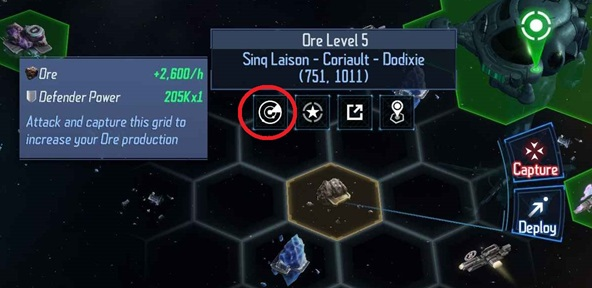
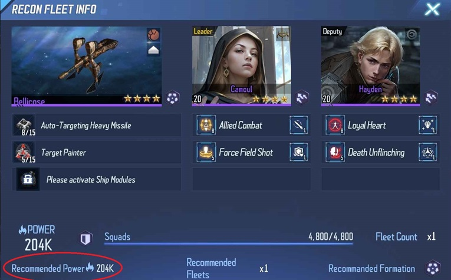

Note: For the first 3 days of starting the game you get a Noob bonus. This halves the capture time of grids, refunds certain resources as
well as a number of other benefits. They can be found by the Icon in the top right of the screen. Read the benefits and make use of them when you can.
Resources
At the beginning, developing your economy is the best way to contribute to the corp, because with your development you will be stronger and will be able to fight for the corp.
This means trying to capture maximum number of grid. Focus ore, ice and alloy at the beginning which will be used for research but don't neglect gas as well as this is used
to build components to repair your fleets. Always us all your 5 mining per day on the resource you need the more, Use your common sense here and space for the RSS you keep running out of
Early game you will want to capture the highest quality rss grids you can balancing not spending to many
resources on repairing your ships. If you scan a grid you can see the power of the fleets you will be fighting, how many and the recommended fleet size. While the type of fleet
you have can vary from this, this recommended size is fairly accurate. Note that the fleets on an RSS grid vary and especially the higher level RSS grids you will encounter
fleets that have high repair and the recommended power may not be enough. If you find your fleets take more than about 20%-30% damage come back later when your fleets are stronger

Nova Credits
There will be a temptation early game to spend Nova Credits on resources and speedups. In the long run king is Gold class ships and commanders and getting them promoted. While
I won't tell you how to spend your money investing in the Free commander, the 199NC commander purchase or the 5x 1880NC Commander purchase is definitely an investment for the long term
Fleets
Fleets will highly depend on what ships and commanders you have available. I highly recommend the ship with the highest bandwidth and Santimona if you have her. Concentrate
on leveling one ship as quick as possible. with a second fleet not far behind. In the early game you won't have the research slots for 2 commanders and 3 or more fleets, these
should be a priority.
Note: You can not at present send two fleets together to capture a resource, they need to be sent separately. For RSS grids you have 3 min to send as many fleets as you can. If a fleet
draws it will automatically re-fight in 2min.
Research
If possible always have 5 research slots in use. This does cost isk but it is worth it. Early game this may not be possible due to lack of RSS but always keep it in mind.
For the first 5 HQ levels I recommend a focus on research for these items. Everything in the Economy section (but don't go overboard, Military, is slightly more important). In the Military
section high priority is Hanger to lvl 5 (Number of fleets you can have), assembly array at a reasonable level (number of components you can make/store to repair fleets) and
command post to at least level two as the highest priority. If you get to HQ level 7 Control Tower to the highest level possible is the major priority. Any research not mention
research when you have the RSS available and there are spare slots. They are important later but not for early game compared to the research mentioned above.